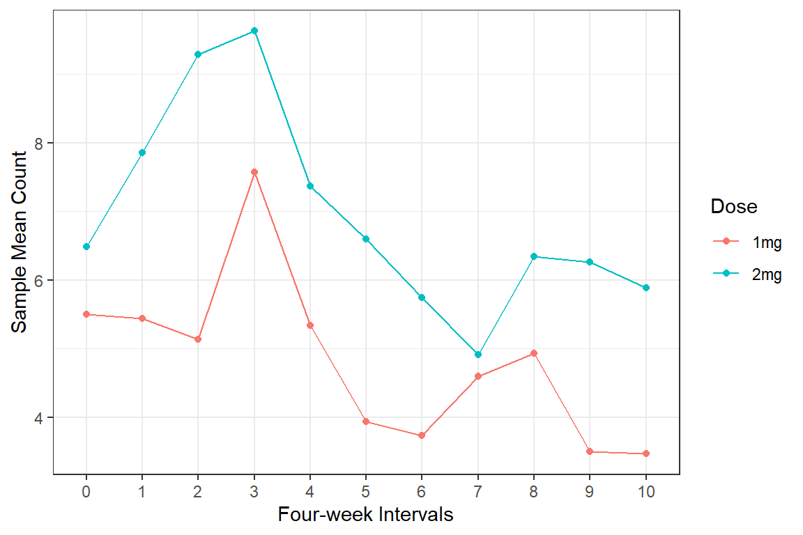

21 GLMM, Binary Outcome: Thailand Education (Hox ch 6)
Article: https://www.nature.com/articles/s41598-023-34478-0
https://stats.oarc.ucla.edu/other/examples/ma-hox/
https://stats.oarc.ucla.edu/r/dae/mixed-effects-logistic-regression/
21.1 PREPARATION
21.1.2 Background
NESTING
* schoolid identify school each student attends
OUCOME
* re student repeated a grade during primary school: Yes or No
PREDICTORS
* sex sex: Girl or Boy
* pped attended preschool: Yes or No
* msesc school’s mean SES, missing for some schools, grand mean centered
21.1.3 Read in the data
df_raw <- haven::read_sav("data/thaieduc.sav") %>%
haven::as_factor() %>%
haven::zap_label() %>%
haven::zap_formats() %>%
haven::zap_widths()Rows: 8,582
Columns: 5
$ SCHOOLID <dbl> 10101, 10101, 10101, 10101, 10101, 10101, 10101, 10101, 10101…
$ SEX <fct> girl, girl, girl, girl, girl, girl, girl, girl, girl, girl, g…
$ PPED <fct> yes, yes, yes, yes, yes, yes, yes, yes, yes, yes, yes, yes, y…
$ REPEAT <fct> no, no, no, no, no, no, no, no, no, no, no, no, no, no, no, n…
$ MSESC <dbl> NA, NA, NA, NA, NA, NA, NA, NA, NA, NA, NA, NA, NA, NA, NA, N…21.1.4 Long Format
One line per child
df_long <- df_raw %>%
dplyr::rename_all(tolower) %>%
dplyr::rename(re = `repeat`) %>%
dplyr::mutate_if(is.factor,
~forcats::fct_relabel(.x, stringr::str_to_title)) %>%
dplyr::mutate(re01 = case_when(re == "No" ~ 0,
re == "Yes" ~ 1))Rows: 8,582
Columns: 6
$ schoolid <dbl> 10101, 10101, 10101, 10101, 10101, 10101, 10101, 10101, 10101…
$ sex <fct> Girl, Girl, Girl, Girl, Girl, Girl, Girl, Girl, Girl, Girl, G…
$ pped <fct> Yes, Yes, Yes, Yes, Yes, Yes, Yes, Yes, Yes, Yes, Yes, Yes, Y…
$ re <fct> No, No, No, No, No, No, No, No, No, No, No, No, No, No, No, N…
$ msesc <dbl> NA, NA, NA, NA, NA, NA, NA, NA, NA, NA, NA, NA, NA, NA, NA, N…
$ re01 <dbl> 0, 0, 0, 0, 0, 0, 0, 0, 0, 0, 0, 0, 0, 0, 0, 0, 0, 0, 0, 0, 0…df_long %>%
psych::headTail(top = 10) %>%
flextable::flextable() %>%
apaSupp::theme_apa(caption = "Thailand Education Data on Repeating a Grade, Long Format")schoolid | sex | pped | re | msesc | re01 |
|---|---|---|---|---|---|
10101 | Girl | Yes | No | 0 | |
10101 | Girl | Yes | No | 0 | |
10101 | Girl | Yes | No | 0 | |
10101 | Girl | Yes | No | 0 | |
10101 | Girl | Yes | No | 0 | |
10101 | Girl | Yes | No | 0 | |
10101 | Girl | Yes | No | 0 | |
10101 | Girl | Yes | No | 0 | |
10101 | Girl | Yes | No | 0 | |
10101 | Girl | Yes | No | 0 | |
... | ... | ... | |||
180665 | Boy | No | Yes | 0.98 | 1 |
180665 | Boy | No | Yes | 0.98 | 1 |
180665 | Boy | No | Yes | 0.98 | 1 |
180665 | Boy | No | Yes | 0.98 | 1 |
21.1.5 Wide Format
One Line Per School
df_wide <- df_long %>%
dplyr::group_by(schoolid, msesc) %>%
dplyr::summarise(n_std = n(),
per_girl = 100*mean(sex == "Girl"),
per_pped = 100*mean(pped == "Yes"),
per_re = 100*mean(re == "Yes")) %>%
dplyr::ungroup()Rows: 411
Columns: 6
$ schoolid <dbl> 10101, 10102, 10103, 10104, 10105, 10106, 10107, 10108, 10109…
$ msesc <dbl> NA, NA, 0.88, 0.20, -0.07, 0.47, NA, 0.76, 1.06, 0.54, 0.50, …
$ n_std <int> 19, 24, 17, 29, 18, 5, 15, 19, 21, 25, 12, 14, 17, 22, 15, 26…
$ per_girl <dbl> 78.95, 45.83, 35.29, 51.72, 44.44, 40.00, 60.00, 63.16, 52.38…
$ per_pped <dbl> 100.00, 95.83, 88.24, 55.17, 66.67, 100.00, 80.00, 100.00, 85…
$ per_re <dbl> 0.00, 0.00, 5.88, 0.00, 27.78, 0.00, 13.33, 15.79, 42.86, 4.0…df_wide %>%
psych::headTail(top = 10) %>%
flextable::flextable() %>%
apaSupp::theme_apa(caption = "Thailand Education Data on Repeating a Grade, Wide Format")schoolid | msesc | n_std | per_girl | per_pped | per_re |
|---|---|---|---|---|---|
10101 | 19 | 78.95 | 100 | 0 | |
10102 | 24 | 45.83 | 95.83 | 0 | |
10103 | 0.88 | 17 | 35.29 | 88.24 | 5.88 |
10104 | 0.2 | 29 | 51.72 | 55.17 | 0 |
10105 | -0.07 | 18 | 44.44 | 66.67 | 27.78 |
10106 | 0.47 | 5 | 40 | 100 | 0 |
10107 | 15 | 60 | 80 | 13.33 | |
10108 | 0.76 | 19 | 63.16 | 100 | 15.79 |
10109 | 1.06 | 21 | 52.38 | 85.71 | 42.86 |
10211 | 0.54 | 25 | 40 | 68 | 4 |
... | ... | ... | ... | ... | ... |
180662 | 0.4 | 24 | 79.17 | 33.33 | 0 |
180663 | 0.57 | 14 | 42.86 | 0 | 28.57 |
180664 | 0.57 | 16 | 56.25 | 25 | 37.5 |
180665 | 0.98 | 30 | 53.33 | 3.33 | 16.67 |
21.2 EXPLORATORY DATA ANALYSIS
21.2.2 Missing Data
df_wide %>%
VIM::aggr(numbers = TRUE, # shows the number to the far right
prop = FALSE) # shows counts instead of proportions
df_wide %>%
dplyr::mutate(miss = ifelse(!is.na(msesc), "Include", "Exclude") %>%
factor) %>%
dplyr::select(miss,
"# Students" = n_std,
"% Girls" = per_girl,
"% Preschool" = per_pped,
"% Repeat Grade" = per_re) %>%
apaSupp::tab1(split = "miss",
caption = "Compare School Excluded due to Missing SES")
| Total | Exclude | Include | p-value |
|---|---|---|---|---|
# Students | 20.88 (6.89) | 19.38 (6.60) | 21.11 (6.92) | .076 |
% Girls | 49.95 (14.89) | 51.72 (17.06) | 49.68 (14.54) | .403 |
% Preschool | 48.10 (37.85) | 53.27 (35.07) | 47.30 (38.24) | .250 |
% Repeat Grade | 15.74 (16.51) | 18.10 (15.58) | 15.38 (16.64) | .235 |
Note. Continuous variables are summarized with means (SD) and significant group differences assessed via independent t-tests. Categorical variables are summarized with counts (%) and significant group differences assessed via Chi-squared tests for independence. | ||||
* p < .05. ** p < .01. *** p < .001. | ||||
21.2.3 Summarize
21.2.3.1 Demographics and Baseline
df_wide %>%
dplyr::filter(complete.cases(msesc)) %>%
dplyr::select("# Students" = n_std,
"% Girls" = per_girl,
"% Preschool" = per_pped,
"% Repeat Grade" = per_re) %>%
apaSupp::tab_desc(caption = "Description of Schools")NA | M | SD | min | Q1 | Mdn | Q3 | max | |
|---|---|---|---|---|---|---|---|---|
# Students | 0 | 21.11 | 6.92 | 2.00 | 16.00 | 21.00 | 26.00 | 41.00 |
% Girls | 0 | 49.68 | 14.54 | 0.00 | 41.67 | 50.00 | 57.69 | 100.00 |
% Preschool | 0 | 47.30 | 38.24 | 0.00 | 4.35 | 48.00 | 85.95 | 100.00 |
% Repeat Grade | 0 | 15.38 | 16.64 | 0.00 | 0.00 | 11.11 | 24.14 | 83.33 |
Note. N = 356. NA = not available or missing; Mdn = median; Q1 = 25th percentile; Q3 = 75th percentile. | ||||||||
df_wide %>%
dplyr::filter(complete.cases(msesc)) %>%
ggplot(aes(x = per_pped,
y = per_re)) +
geom_point() +
theme_bw() 
df_model %>%
dplyr::mutate(re = forcats::fct_recode(re,
"Never Repeated" = "No",
"Repeated a Grade" = "Yes")) %>%
dplyr::select(re,
"Sex" = sex,
"Attended Preschool" = pped,
"SES, school mean" = msesc) %>%
apaSupp::tab1(split = "re",
caption = "Compare Students ",
type = list("Attended Preschool" = "categorical"))
| Total | Never Repeated | Repeated a Grade | p-value |
|---|---|---|---|---|
Sex | < .001*** | |||
Girl | 3,700 (49.2%) | 3,272 (50.7%) | 428 (40.1%) | |
Boy | 3,816 (50.8%) | 3,177 (49.3%) | 639 (59.9%) | |
Attended Preschool | < .001*** | |||
No | 3,772 (50.2%) | 3,099 (48.1%) | 673 (63.1%) | |
Yes | 3,744 (49.8%) | 3,350 (51.9%) | 394 (36.9%) | |
SES, school mean | 0.01 (0.38) | 0.02 (0.37) | -0.04 (0.40) | < .001*** |
Note. Continuous variables are summarized with means (SD) and significant group differences assessed via independent t-tests. Categorical variables are summarized with counts (%) and significant group differences assessed via Chi-squared tests for independence. | ||||
* p < .05. ** p < .01. *** p < .001. | ||||
21.3 MULILEVEL ANALYSIS
21.3.1 Fit Model
Great articles:
https://bbolker.github.io/mixedmodels-misc/glmmFAQ.html#what-methods-are-available-to-fit-estimate-glmms https://www.ellessenne.xyz/blog/2022/06/18/ * https://bbolker.github.io/goettingen_2019/notes/glmm_details.html slides: https://people.math.aau.dk/~rw/Undervisning/TostaII/Slides/2.pdf
21.3.1.1 Default is the Laplace ML
nAGQ = 1(Laplace Approximation): This is the default method for glmer(). It approximates the integrand (the likelihood function) by a normal distribution using a second-order Taylor expansion around the mode. It is more accurate than PQL but slower.
fit_glmer_1 <- lme4::glmer(re01 ~ sex + pped + msesc + (1|schoolid),
data = df_model,
family = binomial)Generalized linear mixed model fit by maximum likelihood (Laplace
Approximation) [glmerMod]
Family: binomial ( logit )
Formula: re01 ~ sex + pped + msesc + (1 | schoolid)
Data: df_model
AIC BIC logLik -2*log(L) df.resid
5457 5492 -2724 5447 7511
Scaled residuals:
Min 1Q Median 3Q Max
-2.180 -0.403 -0.247 -0.168 6.092
Random effects:
Groups Name Variance Std.Dev.
schoolid (Intercept) 1.62 1.27
Number of obs: 7516, groups: schoolid, 356
Fixed effects:
Estimate Std. Error z value Pr(>|z|)
(Intercept) -2.2393 0.1057 -21.18 < 2e-16 ***
sexBoy 0.5340 0.0759 7.04 2.0e-12 ***
ppedYes -0.6265 0.0999 -6.27 3.6e-10 ***
msesc -0.2969 0.2140 -1.39 0.17
---
Signif. codes: 0 '***' 0.001 '**' 0.01 '*' 0.05 '.' 0.1 ' ' 1
Correlation of Fixed Effects:
(Intr) sexBoy ppedYs
sexBoy -0.433
ppedYes -0.384 -0.003
msesc 0.058 0.005 -0.10821.3.1.2 Penalized Iteratively Reweighted Least Squares
nAGQ = 0(Penalized Iteratively Reweighted Least Squares - PIRLS): This is a faster but less exact method that avoids explicit integration by optimizing the fixed and random effects simultaneously in a penalized fashion. It is often referred to as penalized quasi-likelihood (PQL), and provides a good starting point for more accurate methods.
fit_glmer_0 <- lme4::glmer(re01 ~ sex + pped + msesc + (1|schoolid),
data = df_model,
family = binomial,
nAGQ = 0)Generalized linear mixed model fit by maximum likelihood (Adaptive
Gauss-Hermite Quadrature, nAGQ = 0) [glmerMod]
Family: binomial ( logit )
Formula: re01 ~ sex + pped + msesc + (1 | schoolid)
Data: df_model
AIC BIC logLik -2*log(L) df.resid
5461 5496 -2726 5451 7511
Scaled residuals:
Min 1Q Median 3Q Max
-2.174 -0.412 -0.254 -0.176 5.840
Random effects:
Groups Name Variance Std.Dev.
schoolid (Intercept) 1.61 1.27
Number of obs: 7516, groups: schoolid, 356
Fixed effects:
Estimate Std. Error z value Pr(>|z|)
(Intercept) -2.0786 0.0995 -20.88 < 2e-16 ***
sexBoy 0.5156 0.0745 6.92 4.4e-12 ***
ppedYes -0.5998 0.0980 -6.12 9.4e-10 ***
msesc -0.2599 0.2102 -1.24 0.22
---
Signif. codes: 0 '***' 0.001 '**' 0.01 '*' 0.05 '.' 0.1 ' ' 1
Correlation of Fixed Effects:
(Intr) sexBoy ppedYs
sexBoy -0.437
ppedYes -0.413 0.000
msesc 0.049 0.006 -0.11021.3.1.3 Adaptive Gauss-Hermite Quadrature
nAGQ = k(Adaptive Gauss-Hermite Quadrature - AGHQ): Fork > 1, glmer() uses adaptive Gauss-Hermite quadrature, which is the most reliable and accurate method among the available options. This method approximates the integral as a weighted sum over a specific number of points (nodes).Larger values of k (e.g., up to 25) increase accuracy but also significantly increase computation time. Limitation: AGHQ in glmer() is currently implemented only for models with a single scalar random effect (i.e., a single random effects term with a single variance component).
fit_glmer_50 <- lme4::glmer(re01 ~ sex + pped + msesc + (1|schoolid),
data = df_model,
family = binomial,
nAGQ = 50)Generalized linear mixed model fit by maximum likelihood (Adaptive
Gauss-Hermite Quadrature, nAGQ = 50) [glmerMod]
Family: binomial ( logit )
Formula: re01 ~ sex + pped + msesc + (1 | schoolid)
Data: df_model
AIC BIC logLik -2*log(L) df.resid
5452 5486 -2721 5442 7511
Scaled residuals:
Min 1Q Median 3Q Max
-2.200 -0.404 -0.246 -0.167 6.125
Random effects:
Groups Name Variance Std.Dev.
schoolid (Intercept) 1.69 1.3
Number of obs: 7516, groups: schoolid, 356
Fixed effects:
Estimate Std. Error z value Pr(>|z|)
(Intercept) -2.242 0.107 -21.02 < 2e-16 ***
sexBoy 0.535 0.076 7.04 1.9e-12 ***
ppedYes -0.627 0.100 -6.25 4.0e-10 ***
msesc -0.296 0.217 -1.36 0.17
---
Signif. codes: 0 '***' 0.001 '**' 0.01 '*' 0.05 '.' 0.1 ' ' 1
Correlation of Fixed Effects:
(Intr) sexBoy ppedYs
sexBoy -0.430
ppedYes -0.382 -0.003
msesc 0.056 0.005 -0.10721.3.2 Parameter Estiamtes Table
apaSupp::tab_glmers(list("PQL" = fit_glmer_0,
"Laplase" = fit_glmer_1,
"Numeric" = fit_glmer_50),
narrow = TRUE,
var_labels = c("sex" = "Sex",
"pped" = "Attended Preschool",
"msesc" = "School SES"),
general_note = "School SES is grand mean centered.")
| PQL | Laplase | Numeric | |||
|---|---|---|---|---|---|---|
Variable | OR | [95% CI] | OR | [95% CI] | OR | [95% CI] |
Sex | ||||||
Girl | — | — | — | — | — | — |
Boy | 1.67 | [1.45, 1.94]*** | 1.71 | [1.47, 1.98]*** | 1.71 | [1.47, 1.98]*** |
Attended Preschool | ||||||
No | — | — | — | — | — | — |
Yes | 0.55 | [0.45, 0.67]*** | 0.53 | [0.44, 0.65]*** | 0.53 | [0.44, 0.65]*** |
School SES | 0.77 | [0.51, 1.16] | 0.74 | [0.49, 1.13] | 0.74 | [0.49, 1.14] |
schoolid.var__(Intercept) | 1.61 | 1.62 | 1.69 | |||
AIC | 5,461.00 | 5,456.93 | 5,451.66 | |||
BIC | 5,495.62 | 5,491.56 | 5,486.28 | |||
Log-likelihood | -2,725.50 | -2,723.47 | -2,720.83 | |||
Note. N = 7516. CI = confidence interval.School SES is grand mean centered. | ||||||
* p < .05. ** p < .01. *** p < .001. | ||||||
apaSupp::tab_glmer(fit_glmer_50,
var_labels = c("sex" = "Sex",
"pped" = "Attended Preschool",
"msesc" = "School SES",
"schoolid.var__(Intercept)" = "Random Intercept Variance"),
general_note = "School SES is grand mean centered.")Odds Ratio | Logit Scale | ||||||
|---|---|---|---|---|---|---|---|
Variable | Est | [95% CI] | b | (SE) | p | ||
Sex | |||||||
Girl | — | — | — | — | |||
Boy | 1.71 | [1.47, 1.98] | 0.54 | (0.08) | < .001*** | ||
Attended Preschool | |||||||
No | — | — | — | — | |||
Yes | 0.53 | [0.44, 0.65] | -0.63 | (0.10) | < .001*** | ||
School SES | 0.74 | [0.49, 1.14] | -0.30 | (0.22) | .173 | ||
Random Intercept Variance | 1.69 | ||||||
Note. p = significance from Wald t-test for parameter estimate using Satterthwaite's method for degrees of freedom. School SES is grand mean centered. | |||||||
* p < .05. ** p < .01. *** p < .001. | |||||||
21.3.3 Predicted Probabilites
21.3.3.1 Likert Scale
pped sex emmean SE df asymp.LCL asymp.UCL
No Girl -2.24 0.106 Inf -2.45 -2.04
Yes Girl -2.87 0.114 Inf -3.09 -2.64
No Boy -1.71 0.100 Inf -1.90 -1.51
Yes Boy -2.33 0.109 Inf -2.55 -2.12
Results are given on the logit (not the response) scale.
Confidence level used: 0.95 21.3.3.2 Back-Transform
pped sex prob SE df asymp.LCL asymp.UCL
No Girl 0.0960 0.00919 Inf 0.0795 0.1156
Yes Girl 0.0537 0.00580 Inf 0.0434 0.0663
No Boy 0.1534 0.01300 Inf 0.1296 0.1806
Yes Boy 0.0883 0.00874 Inf 0.0726 0.1070
Confidence level used: 0.95
Intervals are back-transformed from the logit scale fit_glmer_1 %>%
emmeans::emmeans(~ pped + sex,
type = "response") %>%
data.frame() %>%
dplyr::mutate(across(c(prob, asymp.LCL, asymp.UCL),
~apaSupp::p_num(.x, stars = FALSE))) %>%
dplyr::mutate(cell = glue::glue("{prob} [{asymp.LCL}, {asymp.UCL}]")) %>%
dplyr::select(Sex = sex,
"Attend Preschool" = pped,
"Est [95% CI]" = cell) %>%
flextable::as_grouped_data(groups = "Sex") %>%
flextable::flextable() %>%
apaSupp::theme_apa(caption = "Predicted Probability of Repeating a Primary Grade, by Sex and Preschool Attendance",
general_note = "Predications are for grand-mean school SES.")Sex | Attend Preschool | Est [95% CI] |
|---|---|---|
Girl | ||
No | .096 [ .079 , .116 ] | |
Yes | .054 [ .043 , .066 ] | |
Boy | ||
No | .153 [ .130 , .181 ] | |
Yes | .088 [ .073 , .107 ] | |
Note. Predications are for grand-mean school SES. | ||
21.3.4 Plot

21.3.4.2 Publishable (95% CI)
fit_glmer_1 %>%
emmeans::emmeans(~ pped + sex,
type = "response") %>%
data.frame() %>%
dplyr::mutate(sex = forcats::fct_rev(sex)) %>%
ggplot(aes(x = pped,
y = prob,
group = sex,
color = sex)) +
geom_errorbar(aes(ymin = asymp.LCL,
ymax = asymp.UCL),
width = .25) +
geom_line(aes(linetype = sex),
) +
geom_point(aes(shape = sex),
size = 3) +
theme_bw() +
scale_color_manual(values = c("dodgerblue", "red")) +
scale_linetype_manual(values = c("longdash", "solid")) +
labs(x = "Attended Preschool",
y = "Predicted Probabiliy of\nRepeated a Primary Grade",
color = NULL,
linetype = NULL,
shape = NULL) +
theme(legend.position = "inside",
legend.position.inside = c(1.0, 1.0),
legend.justification = c(1.1, 1.1),
legend.background = element_rect(color = "black"),
legend.key.width = unit(1.5, "cm"))